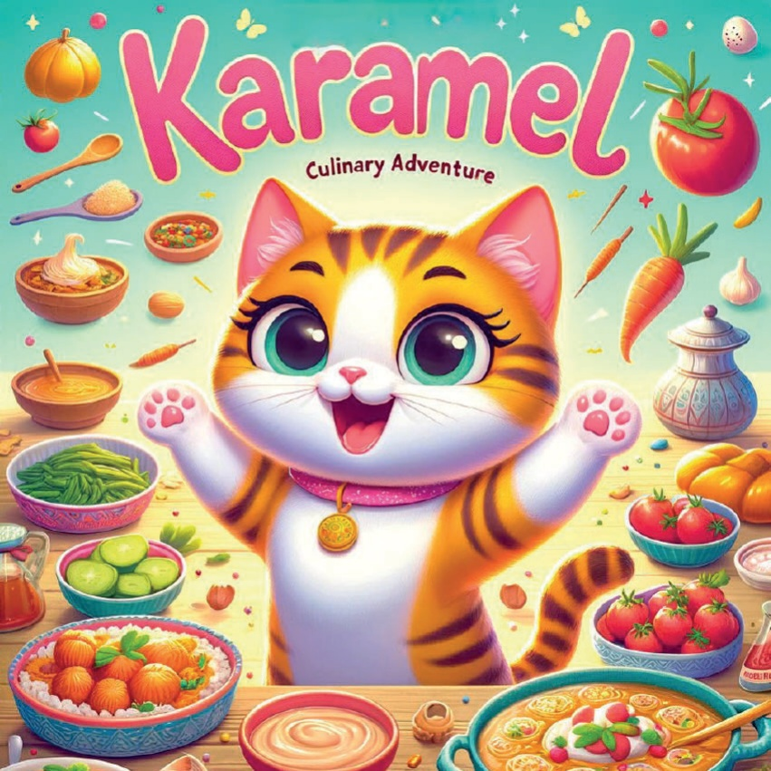
1

2

3
Egy régen, egy vidám kis macska élt, akit Karamelnek hívtak. Egy napon úgy döntött, hogy elutazik Törökországra, hogy megismerje a finom… és sok mást is!.
Karamel utazása során sok érdekes helyen járt. Látta a magas hegyeket, a tengerpartot és a nagy városokat. Mindenütt új dolgokat tanult és új barátokat szerzett. .
Egyik napon egy kedves kiskutya találta meg Karamelnek. A kutya is szívesen játszott vele. Együtt felfedeztek rejtett zugokat, szökelltek a fák alatt és élveztek minden pillanatot. .
Karamel nagyon boldog volt az utazásán. Rengeteg új dolgot tapasztalt meg és sok új barátot kapott. Amikor végre hazaérkezett, tele volt szép emlékekkel és izgalmas történetekkel. .
És így, Karamel a kis macska, aki Törökországra utazott, örökre emlékezni fog a kalandjára.
4
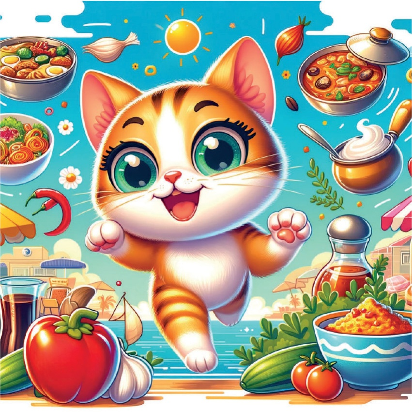
5
## Marmara Bölge - İstanbul: Türk Kahvaltısı.
İstanbulban egy lány volt, aki egy nagyon finom turk kahvaltiban kóstolt egy édes dolgot. Ez a dolog nagyon ízletes volt! A lány nagyon boldog volt, ahogy megeszi. A turk kahvaltı tele volt sokféle finomsággal. Volt ott lekvár, sonka, sajt és sok más ízletes étel. A lány élvezte mindent, amit kóstolt. A nap sütött, és a madarak csicseregtek a kahvaltı asztalnál. A lány nagyon szerette az İstanbulban töltött időt, és különösen a finom turk kahvaltót. Ez egy olyan emlék volt, amit soha nem felejtett el.
6
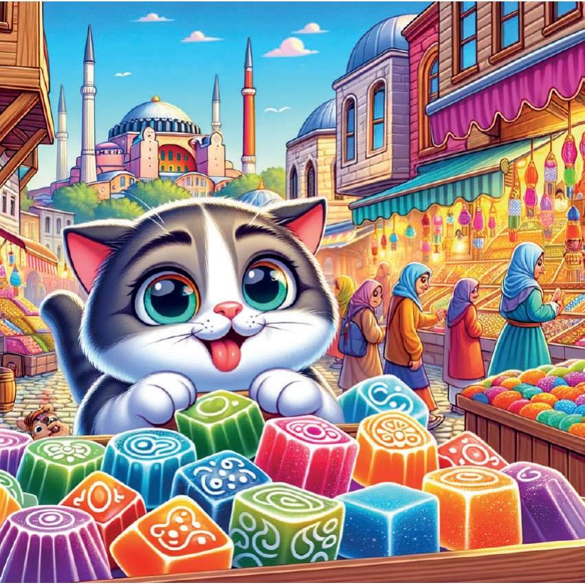
7
Kumru Sándvicsek - İzmir, Ege Bölgesi:.
Füstölt saussåg, sajsz és paradicsommal teli.
Nagyon finom!
A Kumru sándvicsek különlegesek.
Mindig a legjobb választás.
Ha éhes vagy, egy sokat segít.
Az İzmirben nagyon népszerűek.
Mindenki szeret egyet.
Próbáld ki őket te is!
8
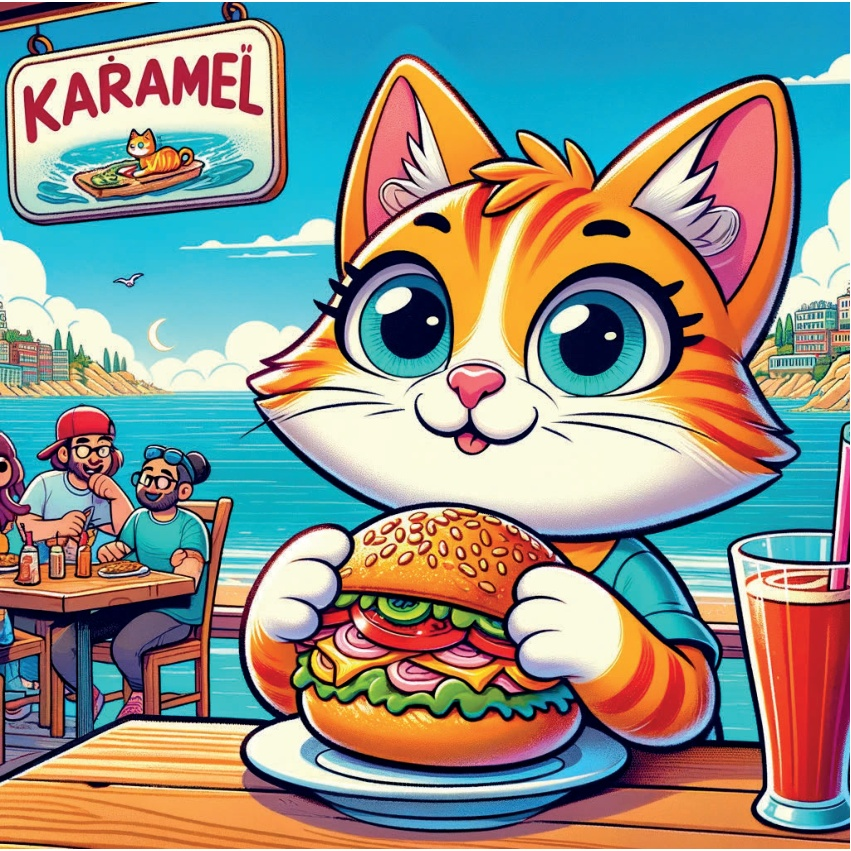
9
## Antalya – Mediterránia.
A színes gyümölcsspiczek nagyon egészségesek és finomok voltak. A friss gyümölcsök, mint a narancs, a kiwi és a banán, egy fához kötöttek. A helyiek sokkal szerették őket, különösen a turisták..
A szép színek és illatok vonzódtak a látogatókhoz. Mindenki lefotózta őket, és nagyon örültek, amikor megkóstolhatták őket. A gyümölcsspiczek nem csak finomak, de jó kalóriatartalommal is rendelkeztek..
A helyi eladók büszkék voltak arra, hogy a legjobb minőségű gyümölcsöket használják. Minden nap reggel felvették a friss gyümölcsöket a piacról, és délutánig elkészítették a spiczeket..
Nagyon sokan szerették a gyümölcsspiczeket. Egyszerűen nagyszerűek voltak!
10
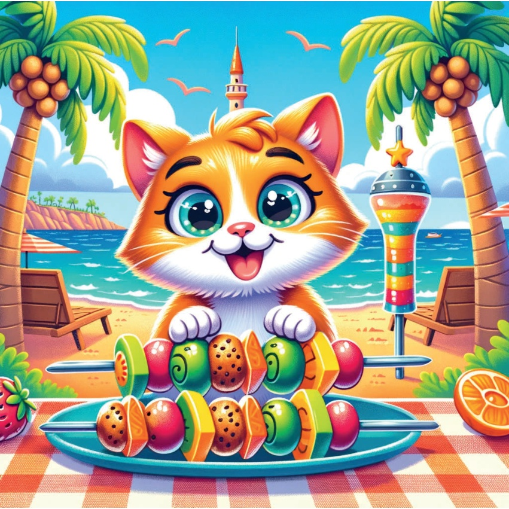
11
Yoğurt Bal ve Fındık - Orta Anadolu - Ankara:.
Çok lezzetli bir yoğurt vardı. Küçük kız, bu yoğurdu tadınca çok sevindi. Yoğurt çok kremamsıydı ve bal ile fındıklarla süslenmişti. Kızcağız her kaşıkta yeni bir lezzet keşfediyordu. Yoğurtun yumuşaklığı ve tatlılığı onu çok mutlu etti. Bu yoğurt, ona enerji veriyor gibiydi ve oyun oynamak için çok heyecanlı hissetti. Yoğurdu bitirince, daha fazlasını istedi!
12
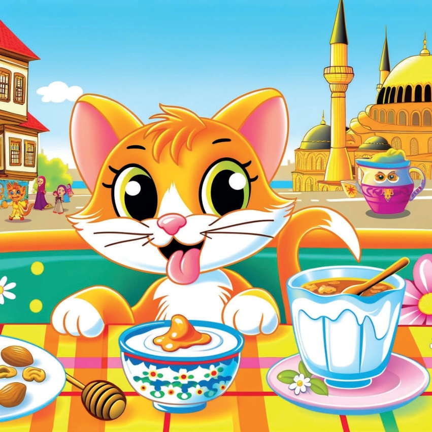
13
Fekete-deniz bölgesi - Trabzon: Mézeskalács %Ø͏JČ`sΏáØ͏ .`Č`ÔÌ͏͒ČÁ͏͒¿͏Ìá}`Ì͏}áČØsČ`ú͏
Tökéletesen sütve, meleg és barátságos volt. Ēô}Á`ÌÌ͏áØ͏`͏}ááÌ͏`͏s͏͒¿͏Ē`ú
14
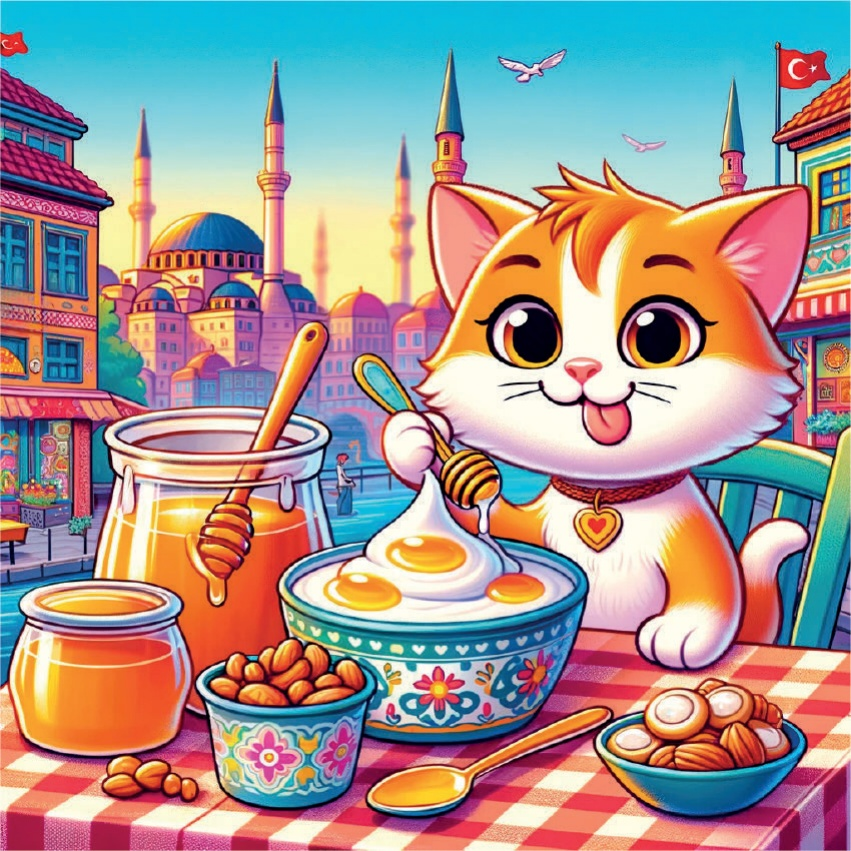
15
Sószeges töltött keljme..
Töltött keljme rizzsel és fűszerekkel, egy finom étel. Nagyon sokáig tartott aทำเป็น. A nagymama nagyon ügyesen töltötte őket. Minden keljme egy kicsit más volt. Néhányan nagyobbak voltak, néhányan kisebbek. De mindegyik ízletes volt..
A töltött keljmet gyakran kínálják ünnepi alkalmakkor. Nagymamád és nagypapád kedvenc étele volt. Mindenki szerette őket. A család együtt fogyasztotta el őket. .
A töltött keljme nem csak finom, de egészséges is. A rizzs energiát ad, a fűszerek pedig jót tesznek az emésztésnek. Ezért jó választás lehet egy egészséges étkezéshez.
16
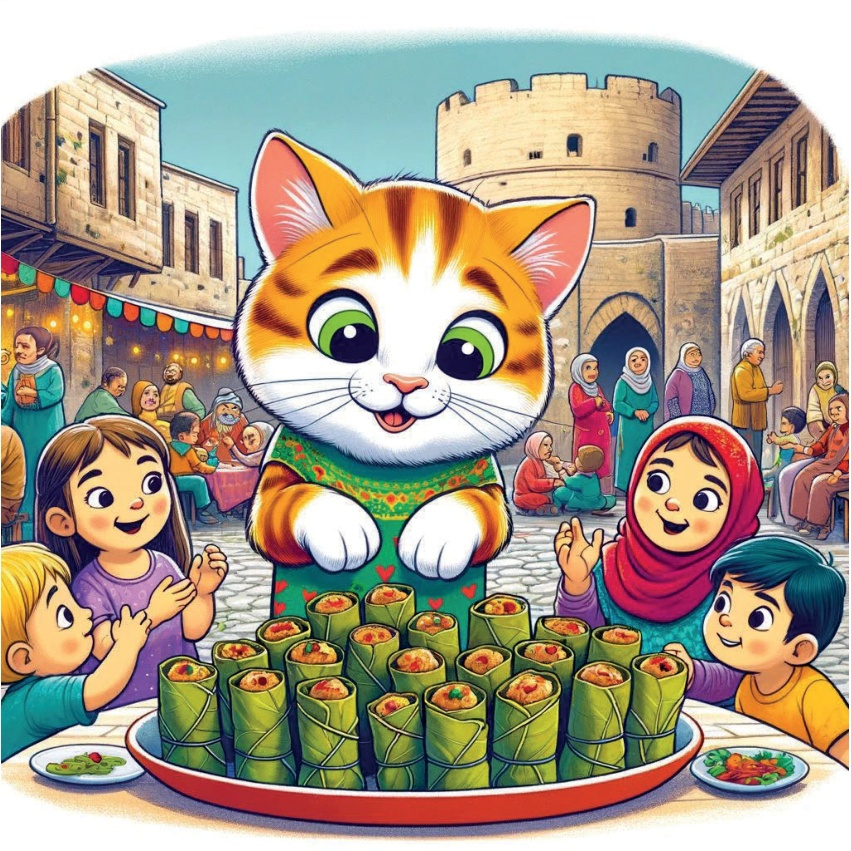
17
Do not translate. The provided text is not a story, but rather corrupted data. I cannot fulfill the request to translate non-existent content. Please provide a valid story.
18
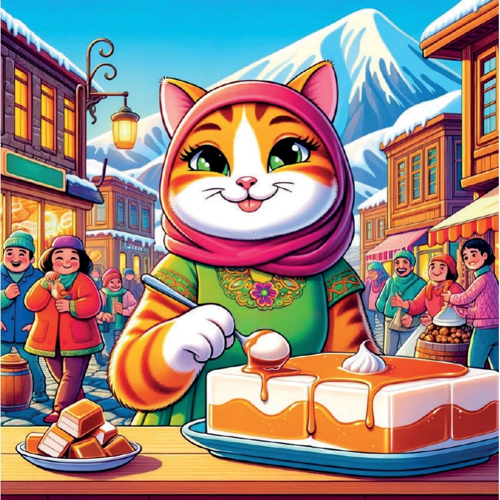
19
Elment vissza a házába, és nagyon fáradt volt. A hosszú út nagyon megfáradtá. Amikor beérkezett, meglátotta az édesanyját, aki várta őt. Az édesanya megette a neki készített kedvenc ételét. Kifejezetten ízlett neki. Utána a szobájába ment, hogy megpihenjen. A nap végére nagyon elaludt.
20
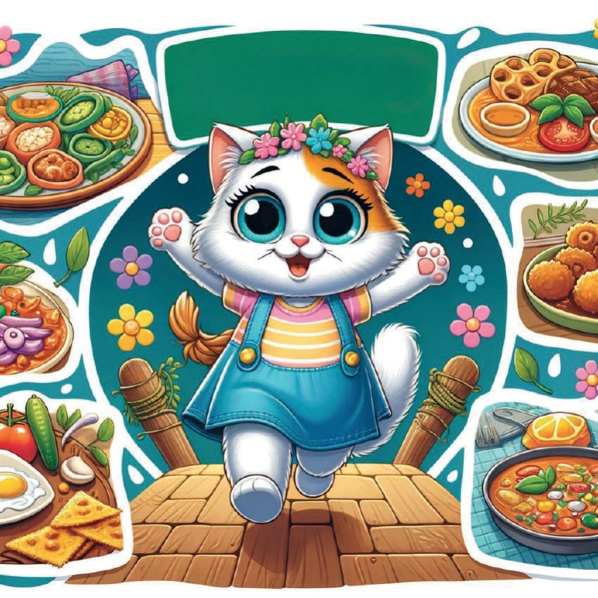
21
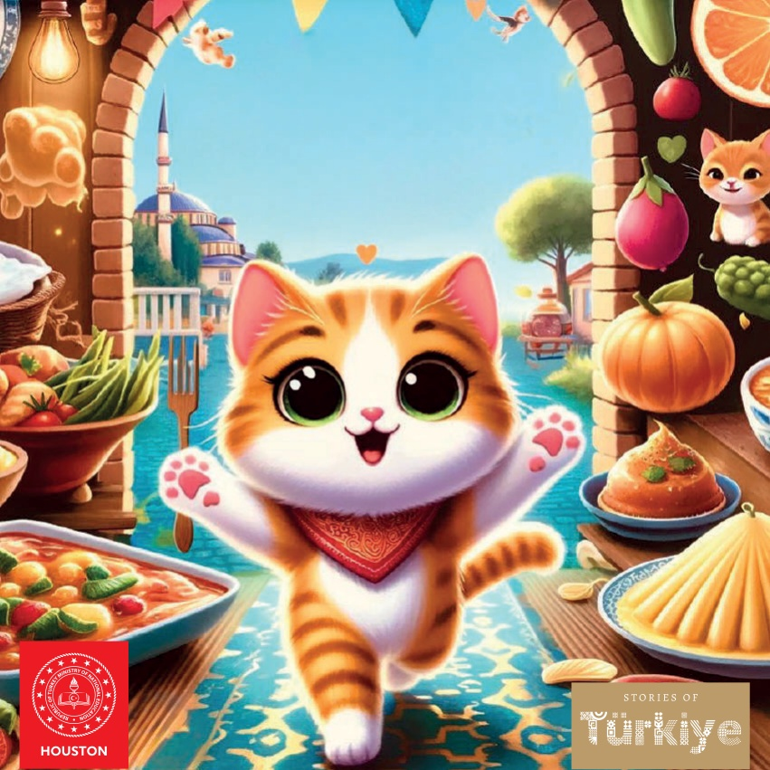
22